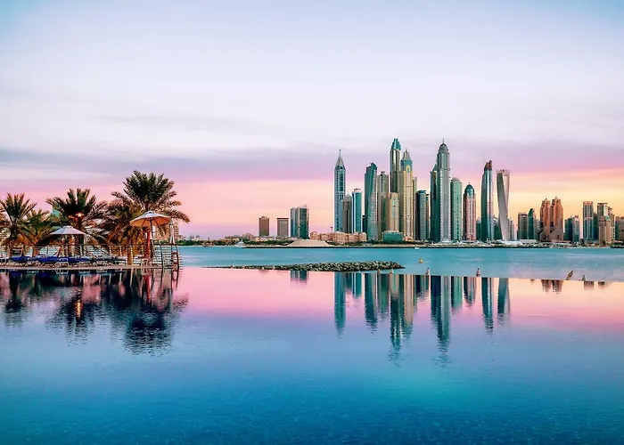
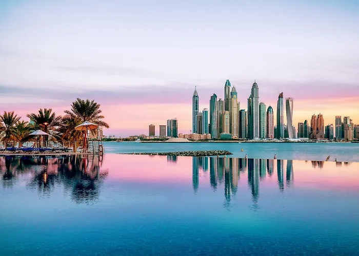

Atlantis, The Palm
5 stars Resort in Dubai, United Arab Emirates
17.6 km to the city centre
9.2
(20650 reviews)
Featuring an outdoor pool area, the 5-star Atlantis, Palm Hotel Dubai offers a conference room with a desk and a xerox. An à la carte restaurant is available in the luxury resort that boasts a+91 7319072104
Atlantis The Royal 5 stars Resort in Dubai, United Arab Emirates
16.4 km to the city centre
9.1
(4522 reviews)
Located 40 km from Dubai Creek SPB airport, the 5-star Atlantis Royal Hotel offers airport shuttle services and car rentals. Boasting an outdoor pool area, the avant-garde hotel is nestled at a +91 6429790564
Jumeirah Burj Al Arab Dubai
5 stars Resort in Dubai, United Arab Emirates
11.3 km to the city centre
9.3
(1544 reviews)
Situated in the Beach & Coast district of Dubai, the 5-star Burj Al Arab Jumeirah hotel has personalised services along with a bureau de change and a cash machine. The luxury hotel offers 202 rooms…+91 6312899000
Dukes The Palm Dubai Hotel 5 stars Resort in Dubai, United Arab Emirates
17 km to the city centre
8.6
(5894 reviews)
Overlooking Arabian Gulf, the 5-star Dukes The Palm, A Royal Hideaway Hotel Dubai offers a bureau de change and a cash machine. Centrally located in Palm Jumeirah, which is the worlds largest man…+91 3498078578
 
